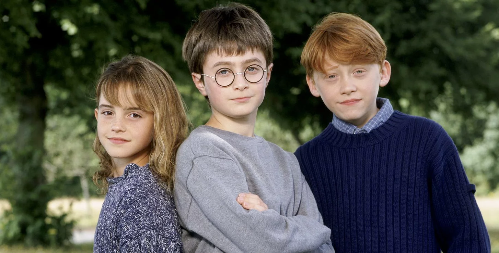

Harry Potter Timeline
20 years of wizards and witches around the world
June 26,1997
Harry Potter and the Philosoper's Stone publised in England in an edition of 500 copies.
Decemder.27.1998
Harry's first apperance on the New York Times bestseller list.
September.4,1999
The first know Harry potter fan-fiction story, "Harry potter and the Man of unknown," is posted to fanfiction.net.
July 2000
The New York Times creates a children's best-seller list after the first three potter books spend a year atop the adult-fiction list.Taking over the adult No.1 spot after Potter moves to the kids' section: danielle stell's The House on Hope Strret.
July 8,2000
The fourth Harry Potter book, Goblet of Fire, reaches stores.The next in the series,Order of The Phoenix,won't appear until 2003; fans refer to this dark period as the three-year summer.
November.4,2001
Harry potter and the Sorcerer's stone,the first movie in the series,premiers in London.

July 22,2002
"I loathe Harry Potter.Thoose books are hopeless and massively cliched- bad thinking and bad writing.And they will vanish.In spite of all the Hype and all the 120 millon copies,they're bound for the rubbish heap in 5 to 6 years." -literary critic Harold Bloom in an interviw with Time
October.25,2002
Richard Harris, who played Hogwarts Head master Albus Dumbledore in the first two movies, dies of Hodgkin's lymphoma at age 72.He is replaced by by Michael Gambon.
November 2002
Rowling files suit against the publisher of Tanya grotter and the magical double bass,a russian Harry potter knockoff.The Tanya Grotter books go on to sell nearly 3 million copies, thrugh Rowlings court victory blocks them from most Western markets.
May 2004
Tokyo university professor Susumu Tachi demonstrates a prototype invisibility cloak at a confrence in San Francisco.
July 2005
In Vancouver,14 copies of Harry Potter and the Half Blood Prince are accidentally sold before the offical release, promoting a court order forbidding the buyers to disclose any of it's contents before the offical release date.
July 11,2007
U.S. premiere of Order of the Phoenix, in which Harry and Cho Chang share a kiss.
July 21,2007
8.3 million copies of the Deathly Hallows sells in the U.S. duringthe first 24 hours on sale.
July 2007
By the time the finally book, Harry Potter and the Deathly Hallows, is released,publisher Bloomsbury has spent some 10 million nearly 20 million on an army gaurd,satellite traking systems and legal contracts to prevent any leaks.
June 18,2008
Sales of Harry Potter books pass 400 million mark.
July 29,2008
IBM demonstrates software that scans,sorts,and stores personal memories,named pensive,for Dumbledore's basin of thoughts.
June 15,2009
Qudditch costumes get a makeover-with added protective gear reminiscent of classic Amrican football padding-in harry Potter and the Half Blood Prince.
January.6,2011
Universal's Wizarding Worldof Harry Potter in orlando announces the sale of its millionth Butterbeer
July 15,2011
Deathly Hallows 2 is released in the U.S.
July 31,2011
Limited registration for the fan site Pottermore, were Rowling releases new content about the Harry Potter Universe
July 27,2012
Rowling reads from the Peter Pan at the opening ceremony of the London Olympics
September.27,2012
Rowling published The Casual Vacancy.a social satrie
July 30,2016
Harry Potter and the Cursed Child opens in Loden,with a script by J.K Rowling,Throne and director Jhon Tiffany
November.10,2016
Fantastic Beasts and Where to Find Thm opens in Theaters
April 9,2017
In its 9th months in Lodon's West End, Harry Potter and the Cursed Child wins a record-setting 9 olivier awards,including Best New Play